Dataset의 크기 : 25503
Dataset에 존재하는 클래스의 갯수 : 20
setup
{'name': 'hoyeon', 'path': 'C:/Users/22668/Desktop/github/datasets/creatorcamp'}Recap & Goal
- 궁극적인 목적은 20개의 클래스를 가지는 픽토그램 데이터를 잘 분류하는 것입니다.
- 하지만 데이터 안에 이상치(실제사진)가 있는 몇 개의 클래스가 있었습니다.
- 이는 분류모형의 학습에 악영향을 끼칠 수 있습니다.
- 따라서 여기서는 이상치를 제거하는 모형을 만듭니다.
Import & Setup
Working
첫번째 모형
- EDA에서 픽토그램의 경우 픽셀값을 확인해본 결과 모든 채널에서 1주변으로 값이 몰려있고 실제사진의 경우 1주변에 몰려있지 않고 값이 골고루 퍼져서 존재함을 확인했습니다.
- 이는 다음을 암시합니다.
- 상기의 가정을 통해서 기준값을 통해 이상치를 찾는 코드를 구현해보면 아래와 같습니다.
Code
def ck_outlier(img,
threshold, #확률밀도함수의 기준값
sampling_num = 30): #Kde에서 sampling할 갯 수.
#Kde추정하는 객체 만들기
X = torch.linspace(0.5,1.1,sampling_num)
#검은색 배경을 가진 추상이미지는 별로 없고 실제사진이 검은색이므로 확률분포에서 0.5이상인 부분만 보면 됨!
estr_0 = stats.gaussian_kde(img[0].reshape(-1), bw_method='silverman')
estr_1 = stats.gaussian_kde(img[1].reshape(-1), bw_method='silverman')
estr_2 = stats.gaussian_kde(img[2].reshape(-1), bw_method='silverman')
#확률밀도함수의 y값 구해보기
r_max = np.max(estr_0(X))
g_max = np.max(estr_1(X))
b_max = np.max(estr_2(X))
#가정,R,G,B값 중 3개 모두 확률밀도의 최댓값이 threshold이상이면 픽토그램.
count=0
if r_max>threshold:
count+=1
if g_max>threshold:
count+=1
if b_max>threshold:
count+=1
if count >=3:
return False #추상이미지는 아웃라이어 아니므로 False
else:
return True 기준값 찾기
- 가정에 의하면 픽토그램과 이상치(실제사진)을 구분하는
기준값이 존재하므로 이를 찾는다면 픽토그램에서 실제사진을 제거할 수 있습니다. - 따라서 전체데이터에서 이미지를 몇개 샘플링하여 픽토그램과 이상치를 구분하는
기준값을 찾습니다.
1. 이미지 샘플링하여 데이터 만들기
- 이미지를 샘플링 한 후 직접 레이블링 한 코드입니다.
Code
#1. 기준값을 찾기위해서 사용할 이미지들 임의적으로 추출
tmp = []
except_class = [1,5,8,14,19]
for i in range(0,20):
if i not in except_class:
class_imgs=get_class_image(all_data,class_num=i,sampling=20)
else:
class_imgs=get_class_image(all_data,class_num=i,sampling=40)
tmp.append(class_imgs)
imgs = torch.cat(tmp)
#2. 추출한 이미지에 대하여 직접 레이블링
ch_0_label = [0] * 20
ch_1_label = [True,True,True,True,True,False,True,True,True,False,True,True,True,True,True,True,True,True,True,True,1,1,1,1,0,1,1,1,1,1,1,1,1,1,1,1,0,1,1,1]
ch_2_label = [0] * 20
ch_3_label = [0] * 20
ch_4_label = [0] * 20
ch_5_label = [False,False,False,False,False,True,True,False,True,True,False,False,False,False,False,False,True,False,True,True]+[0,1,0,1,1,0,0,0,1,1,0,0,0,1,0,0,0,0,0,0]
ch_6_label = [0] * 20
ch_7_label = [0] * 20
ch_8_label = [False,True,True,True,True,True,True,True,True,True,True,True,False,True,False,False,True,False,True,True]+[0,1,1,1,0,1,0,1,1,1,0,1,1,0,1,1,1,0,1,1]
ch_9_label = [0] * 20
ch_10_label = [0] * 20
ch_11_label = [0] * 20
ch_12_label = [0] * 20
ch_13_label = [0] * 20
ch_14_label = [False,True,True,True,True,True,True,False,False,True,True,False,False,True,True,False,True,True,True,False]+[1,0,1,0,0,0,1,0,1,0,0,0,1,1,1,1,1,1,1,0]
ch_15_label = [0] * 20
ch_16_label = [0] * 20
ch_17_label = [0] * 20
ch_18_label = [False,False,True,True,True,True,True,False,False,True,False,False,False,False,True,False,True,True,True,False]+[0,0,1,0,0,0,1,1,0,0,1,1,0,0,1,0,0,1,1,1]
ch_19_label = [0] * 20
y_true=pd.DataFrame({'y_true':ch_0_label + ch_1_label + ch_2_label + ch_3_label + ch_4_label + ch_5_label + ch_6_label + ch_7_label\
+ch_8_label + ch_9_label + ch_10_label + ch_11_label + ch_12_label + ch_13_label + ch_14_label + ch_15_label\
+ch_16_label + ch_17_label + ch_18_label + ch_19_label})
y_true=y_true['y_true'].map({False:0,True:1,0:0,1:1})
y_true=y_true.values.reshape(-1,1)샘플링된 이미지에서 픽토그램은 379개 실제사진은 121개 존재합니다.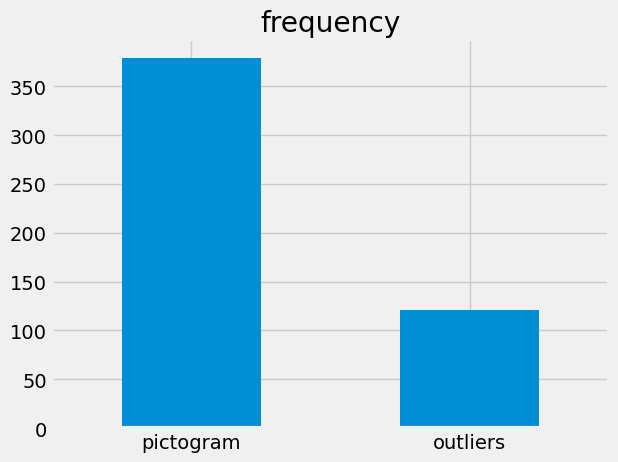
2. 기준값 비교하기
- 기준값을 찾기 위해서는 어떤 값을 써야할까요?
- 기준값의 목적은 픽토그램과 이상치를 분류하는 것이므로 분류성능이 좋아야 할 것 입니다.
- 따라서 여기서는
f1-score가 좋은 기준값을 최종적인 선택을 위한 먼저 후보로 두었습니다.
- 다만 이렇게 해도 여기서 f1-score가 비슷하게 나오는 기준값은 여러가지 입니다.
- 그러므로 그 중에서도 가장 좋은
기준값을 선정해야할 것입니다. - 모델의 특성상 이러한 기준값들은 다음과 같은 특징을 지닙니다.
- mission3에 사용할 훈련데이터를 비교적 많이 삭제하나 이상치도 많이 삭제하는 모델
- mission3에 사용할 훈련데이터를 비교적 덜 삭제하나 이상치도 덜 삭제하는 모델
- 저는 훈련데이터의 양은 어느정도 충분하기에 이상치를 많이 삭제하는 모형이 더 좋다고 판단했습니다.
- 왜냐하면 이상치가 나중에 분류모형에 미칠 악영향이 훨씬 더 클 것이기 때문입니다.
- 따라서 최종후보들중에서
recall이 높은 가장 높게 나오는 기준값을 선택하겠습니다.
Top3 f1-score
- 가장
f1-score가 뛰어난 기준값들은 아래와 같습니다.
| th | f1_sc | |
|---|---|---|
| 12 | 3.215190 | 0.917749 |
| 13 | 3.316456 | 0.910638 |
| 14 | 3.417722 | 0.915254 |
Top3 recall
- 이들 각각의 기준값에 대한
recall은 아래와 같습니다.
| th | recall_sc | |
|---|---|---|
| 12 | 3.215190 | 0.876033 |
| 13 | 3.316456 | 0.884298 |
| 14 | 3.417722 | 0.892562 |
Confusion Matrix
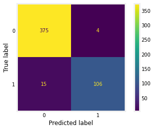
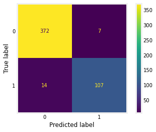
모형 결정하기
- 최종적으로 Top3 f1-score를 기록하는 예측모형 중
threshold = 3.417722인 모형을 선택했습니다. - 기준1,2를 동시에 만족하여 높은 성능과 가능한 많은 이상치의 제거를 보장하기 때문입니다.
모형의 성능확인
- 새로운 데이터셋을 추가적으로 구성하여 모형의 성능을 간단히 확인해보았습니다.
test1
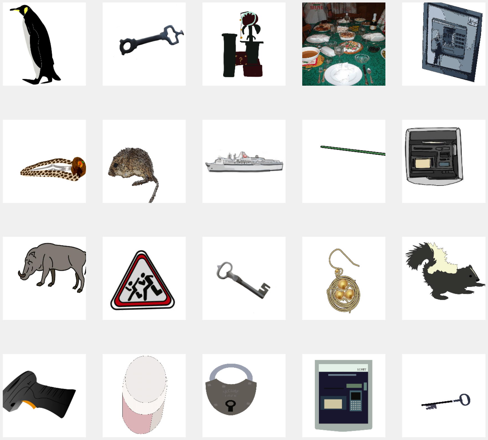
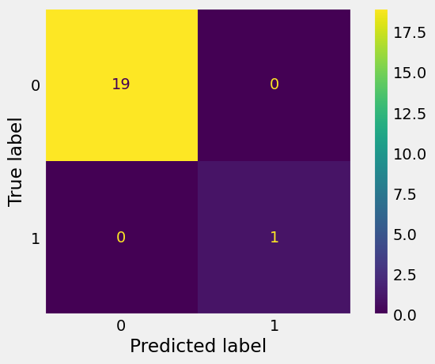
test2
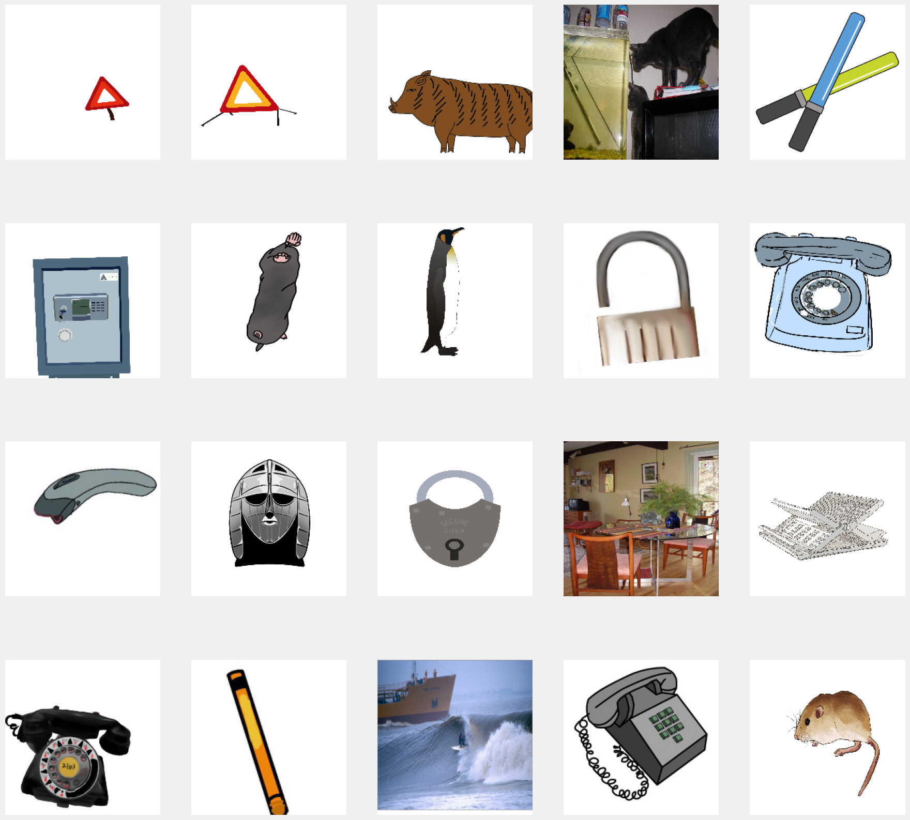
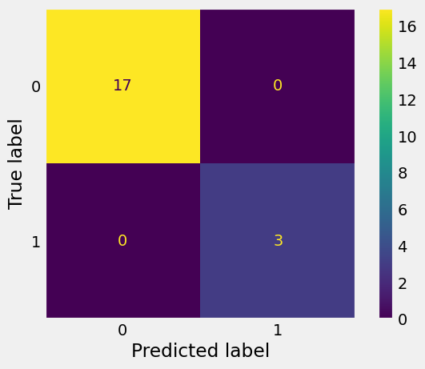
- 각각 20개의 이미지를 가지는 서로다른 test data를 구성하여 모델의 성능을 확인해보았습니다.
- 총 40개 중 1개의 이미지에 대해서만 오분류했습니다.
- 성능이 꽤 좋음을 알 수 있습니다.
전체데이터에서 이상치 찾기
- 만들어진 첫번째 모형을 전체데이터에 적용합니다.
- 결과는 아래와 같습니다.
Code
error_idx = []
outlier_predict1=[]
for idx in range(p1):
if idx % 5000 == 0:
print(f'{idx} ....')
try:
if ck_outlier(all_data[idx][0],k)==False:
outlier_predict1.append(0)
else:
outlier_predict1.append(1)
except: #오류가 날 경우 0으로 반환
outlier_predict1.append(0)
df=pd.DataFrame({'predict':outlier_predict1})
#df.to_csv('/content/drive/MyDrive/anmly_dtcion_rst_1.csv')
path1 = inform["path"] + '/anmly_dtcion_rst_1.csv'
df=pd.DataFrame({'predict':outlier_predict1})
df.to_csv(path1)
outlier_predict2=[]
ck_list=[None]
for idx in range(p1,p2):
if idx % 500 == 0:
print(f'{idx} ....')
try:
if ck_outlier(all_data[idx][0],k)==False:
outlier_predict2.append(0)
else:
outlier_predict2.append(1)
except: #오류가 날 경우 0으로 반환
outlier_predict2.append(0)
path2 = inform["path"] + '/anmly_dtcion_rst_2.csv'
df=pd.DataFrame({'predict':outlier_predict2})
df.to_csv(path2)
#역행렬이 구해지지 않아서 오류코드가
#21945번째 이미지 에러
#예외처리문으로 수정한 이유
outlier_predict3=[]
ck_list=[None]
for idx in range(p2,len(all_data)):
if idx % 500 == 0:
print(f'{idx} ....')
try:
if ck_outlier(all_data[idx][0],k)==False:
outlier_predict3.append(0)
else:
outlier_predict3.append(1)
except: #오류가 날 경우 0으로 반환
outlier_predict3.append(0)
error_idx.append(idx)
path3 = inform["path"] + '/anmly_dtcion_rst_3.csv'
df=pd.DataFrame({'predict':outlier_predict3})
df.to_csv(path3)Code
#데이터프레임 만들기 -
#모든 클래스에서 이상치 검사
path1 = inform["path"] + '/anmly_dtcion_rst_1.csv'
path2 = inform["path"] + '/anmly_dtcion_rst_2.csv'
path3 = inform["path"] + '/anmly_dtcion_rst_3.csv'
df_1=pd.read_csv(path1)
df_2=pd.read_csv(path2)
df_3=pd.read_csv(path3)
df=pd.concat([df_1,df_2,df_3])
df=df.reset_index(drop=True)
_targets=pd.DataFrame({'category':all_data.targets})
df=pd.concat([df,_targets],axis=1)
df=df.drop(columns={'Unnamed: 0'})
df['address']=[os.path.basename(address) for address,_ in all_data.imgs]Code
| address | predict | category | |
|---|---|---|---|
| 9421 | qqbcsppljdltwzapjtbr | 0 | 6 |
| 4980 | hwofwsgjoxkfhawplbhu | 1 | 5 |
| 914 | mqqxrlwghsnfxwgpbmch | 1 | 0 |
| 24979 | veynjbiugcwnoagiopmv | 0 | 18 |
| 4028 | glwatzhxafftqoieiimu | 0 | 3 |
| 1980 | edcmqpgaioimnqtnwjvt | 0 | 1 |
| 8964 | orrfbwghoupwfdhvyejc | 0 | 6 |
| 7153 | gxuxkfolqaedlryneobz | 0 | 6 |
| 21250 | ommrmrkfutfmqwjijcdh | 0 | 15 |
| 17491 | sjnzmrkcqvjejazxcjxl | 0 | 10 |
데이터셋의 크기 : 25503
확률분포모델에서 이상치(실제사진)이라 판단한 이미지의 갯수 : 2218
확률분포모델에서 픽토그램이라 판단한 이미지의 갯수 : 23285- 이상치(실제사진)로 분류한 이미지를 실제로 확인해보면 아래와 같습니다.
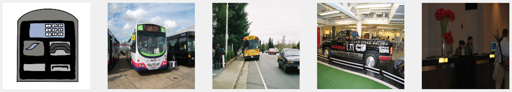
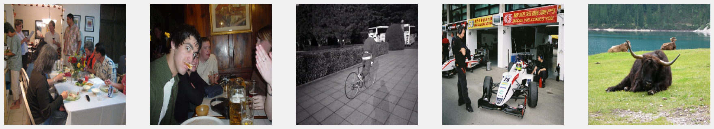
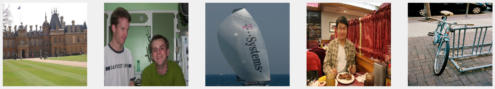
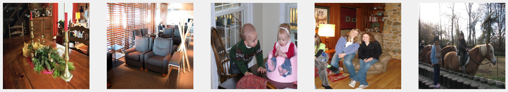
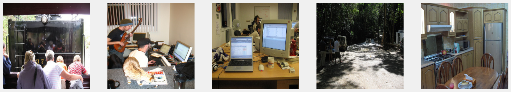